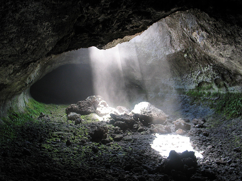

Finalmente, después de mucho pensar decidiste ingresar en la cueva de la derecha. al entrar se pueden ver unas pequeñas columnas de luz que van marcando el camino. Es una cueva húmeda y fría, se pude ver en sus paredes algo de vegetación, a media que sigues avanzando el camino se va haciendo más estrecho y oscuro, por ese motivo decís avanzar tu solo y el resto espera en la entrada, en ese momento, vuelves a encender una antorcha y sigues avanzando. casi cuando no puedes pasar por el pequeño camino, notas que el final de la cueva esta frente a ti. Al llegar, detrás de una piedra, puedes divisar el cofre con el tesoro, que tanto les costó encontrar. Eres millonario.